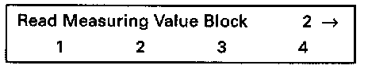
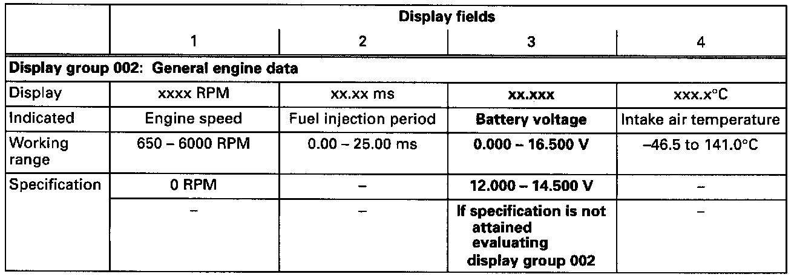
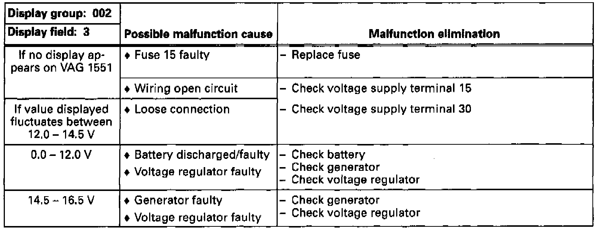
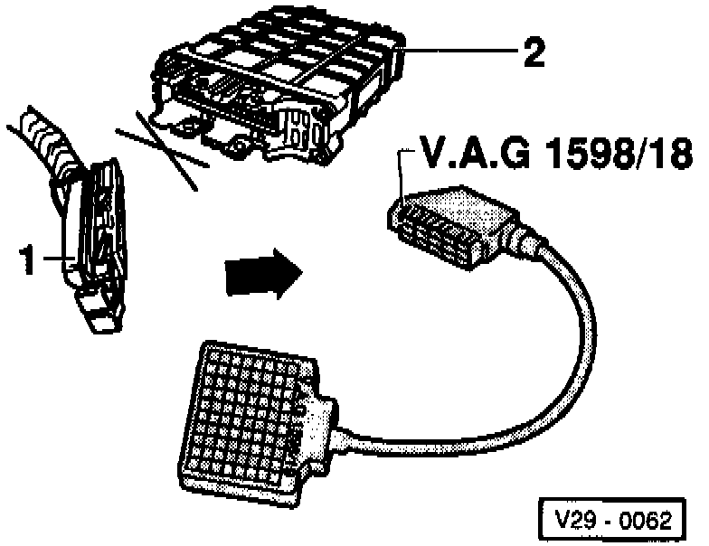

Engine Control Module (ECM) Voltage Supply, Checking
Engine Control Module (ECM) Voltage Supply:Checking:
Special tools, testers and auxiliary items:
- VAG 1551/1552 scan tool with VAG 1551/3 adapter cable.
- VAG 1598/18 test box.
- Multimeter (Fluke 83 or equivalent).
- Connector test kit VW 1594.
- Wiring diagram.
Test sequence:
- Connect VAG 1551/1552 scan tool and select "Engine Electronics" address word 01. When doing this ignition must be switched on. Testing and Inspection
Indicated on display
- Press buttons -0- and -8- to select "Read Measuring Value Block" function 08 and press -Q- button to confirm input.

Indicated on display
- Press buttons -0-, -0- and -2- to input display group 002 and press -Q- button to confirm input.

Indicated on display (1-4 = Display fields)
- Check the battery voltage (display field 3).

- Press -> button.
- Press buttons -0- and -6- to select "End Output" function 06 and press -Q- button to confirm input.
Evaluating display group 002

Checking voltage supply terminal 30
- Switch ignition off.
- Connect VAG 1598/18 test box to ECM wiring harness (arrow).
- Connect multimeter using test leads from VW 1594 to measure voltage at test box sockets 1 and 54.
Specification: 12-14.5 volts.
If the specification is not attained:
- Check wiring according to wiring diagram.
Checking voltage supply terminal 15
- Switch ignition off.

- Connect VAG 1598/18 test box to ECM wiring harness (arrow).
- Switch ignition on.
- Connect multimeter using test leads from VW 1594 to measure voltage at test box sockets 1 and 23.
Specification: 12-14.5 volts.
If the specification is not attained:
- Check wiring according to wiring diagram.